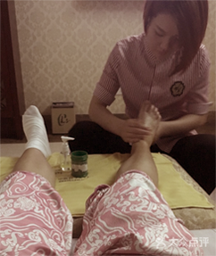
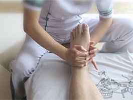

良子家训：
"良家子女，用良药，凭精良技术、靠优良服务、挣的是良心钱"
良子准则："诚信永在心，以德换真情"
良子精神："用智慧去创新，用心灵去服务"
良子追求："开健康服务的先河，创自然疗法之奇迹"
良子文化
良子家训，这含意深邃的23个字，最集中的继承和体现"德、诚、信"的中华民族之传统美德，它深刻的反映出良子哲学，良子价值观，良子意识，良子道德，良子思维。

足部全息养生
专业的创新足部手法，独特专家秘方，带您全新感觉全心的健康享受，专业理疗技师精心操作，让您在静逸中享受营养游走全身的奇妙感觉。项目手法：经典足疗+背部+腿部+手臂。
时尚•SPA
是主要是对人体的脊椎、腰椎、胸椎来做的。包括：足部香薰磨砂、和全身的精油护理。独特的手法配合精油。加上音乐和香薰的疗法让人体身心放松。
中医组合
是中医足疗和中医推拿的一个结合，可根据您的身体状况，有针对性的为您服务，亦可疏通气血、平衡阴阳、调理脏腑、促进新陈代谢，从而达到强身健体增强抗病能力、延缓衰老、健康长寿的目的。
淋巴排毒
淋巴排毒能促进淋巴液排泄、活化细胞、特别对浮肿及问题皮肤有特别功效。它能改善代谢机能及免疫机能，所以 淋巴排毒是目前最有效的排毒方法。
艾灸养生
是用艾叶制成的艾灸材料产生的艾热刺激体表穴位或特定部位，通过激发经气的活动来调整人体紊乱的生理生化功能，从而达到防病治病目的的一种治疗方法。
无论是中医，足疗，松骨或者油压，每次技师总会送上满意的服务

-
头部养生
-
中医养生
-

足底养生
-
SPA养生